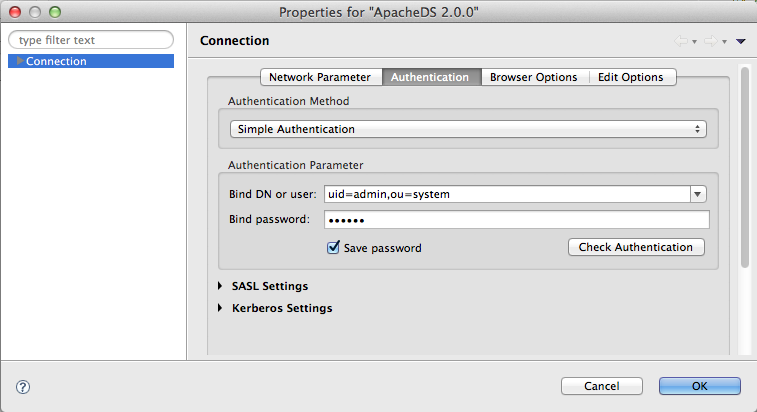
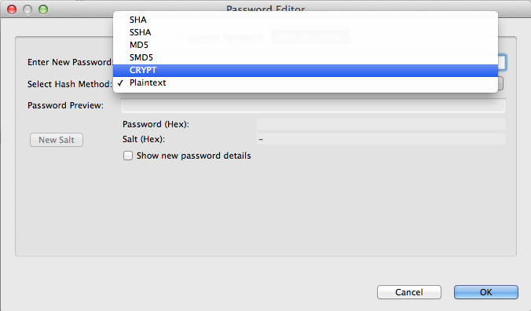

ApacheDS 2.0
Downloads
Documentation
- Basic User Guide
- Advanced User Guide
- Developer Guide
- Kerberos User Guide
- Configuration
- JavaDocs
- Cross-Reference
Support
Community
About Apache
4.1.1.2 - Name/Password Authentication
This is the most common authentication system, though not the safest. The user provides his name and a password. Both are passed as clear text to the server, which checks that the user exists, and that its password is correct.
User’s name retrieval
The first thing the server does is to check that the user’s name exists in the server. The provided name is always a full DN.
Here is an example of simple authentication using Studio, where we authenticate the uid=admin,ou=system user :

The password is not visible here, but this is just for security reasons.
This request is sent to the server, which will check that the uid=admin,ou=system exists in its backend. If it doesn’t, the authentication will fail.
Password check
That’s not enough : once the user is retrieved, we have to check the provided password against the stored password.
The entry associated with the user should contain a userPassword AttributeType, otherwise the request will be rejected. Here is an example of such an entry :
version: 1
dn: uid=admin,ou=system
objectClass: top
objectClass: person
objectClass: organizationalPerson
objectClass: inetOrgPerson
cn: system administrator
sn: administrator
displayName: Directory Superuser
uid: admin
userPassword:: c2VjcmV0
As we can see, this entry has an userPassword which contains the base64 encoded password. If we decode the value, we get :
userPassword: secret
Not exactly safe…
Password storage
As we have just seen, the password is stored in plain text in the server. This is not exactly safe ! As soon as someone gets access to your server, all the passwords are compromised. This is certainly not the way we want to protect our users !
Hopefully, you can hash those passwords, instead of storing them as provided.
ApacheDS let you select an encryption type when you inject a password :

The following hash method are available :
| Hash method | Comment |
|---|---|
| PLAIN | no hashing |
| MD5 | - |
| SMD5 | Salted MD5 |
| crypt | - |
| SHA | SHA-1 |
| SSHA | Salted SHA-1 |
| SHA-256 | SHA-2 (Studio 2.0) |
| SSHA-256 | Salted SHA-2 (Studio 2.0) |
| SHA-384 | SHA-2 (Studio 2.0) |
| SSHA-384 | Salted SHA-2 (Studio 2.0) |
| SHA-512 | SHA-2 (Studio 2.0) |
| SSHA-512 | Salted SHA-2 (Studio 2.0) |
How it works ?
So the server receives a Name/Password authentication request. The password is in clear text up to this point. Once the user is found in the server, and if it has a userPassword attributeType, the server extracts each values contained in this AttributeType (we may have more than one password per user) and check the provided password against those values.
This is not as simple as it seems : as we may have hashed the values on the server, we first have to detect the selected hash method, and then hash the provided password, which result is compared to the stored hashed value.
Hopefully, the hash method is stored within the hashed password in the server :
version: 1
dn: uid=admin,ou=system
objectClass: top
objectClass: person
objectClass: organizationalPerson
objectClass: inetOrgPerson
cn: system administrator
sn: administrator
displayName: Directory Superuser
uid: admin
userPassword:: c2VjcmV0
userPassword:: {CRYPT}FgGgCMynLfYGw
Here, one of the userPassword value is hashed using the crypt algorithm. The following code is used to check the provided password :
for each stored password
if it has a hash method
then
extract the method
hash the provided password using this method
compare the result with the stored hash value
if they are equal
then
return true
else
compare the provided password with the stored password
if they are equal
then
return true
done
return false
o Never store a password as plain text.
o Prefer salted methods over non salted ones, and prefer the strongest one (here, SSHA-512 on Studio 2.0, or SSHA)
o crypt is also a good choice
o Pick strong passwords, otherwise if someone gets access to the list of passwords, he or she can run a rainbow attack on it.
o Keep in mind that whatever you do, the password will be passed in clear text from the client to the server. Always use startTLS before any bind, or at least use SSL